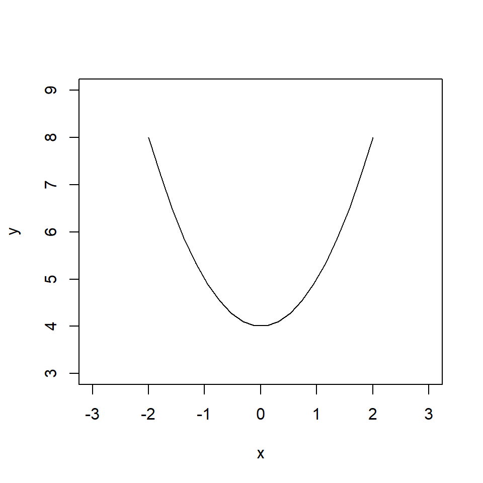

Differentiation
Motivation
We will start with a basic question, what is the gradient of a line?
The three plots below each have three straight lines. The first has a positive gradient (or positive slope) i.e. as \(x\) increases so does \(y.\) The second has a negative gradient, as \(x\) increases \(y\) decreases. The third has a zero gradient, as \(x\) increases, there is no change in \(y\).
Let’s look at some more examples.
In the plots above, the gradient of the line is not constant, so how can we find the gradient of these lines at different points? The answer is differentiation.
Differentiation is used to find the rate of change of one variable with respect to another. In these examples, the variables are \(x\) and \(y\) but we may instead be interested in a biological relationship, say population size \(P\) and time \(t\).
This idea of specifying the rate of change of one variable with respect to another is used in infectious disease and ecological modelling. As modellers, we specify the gradient of the relationship between two variables as a function of biological processes,then we find the equation of the line to predict how the variables change with each other.
Before we specify gradients as functions of biological processes, we will first learn how to find the gradient of the line from first principles.
Principle of differentiation
To learn the concept of differentiation, we will start with a plot of two variables, \(y\) and \(x\).
We want to understand the relationship between \(y\) and \(x\), more specifically we want to quantify the gradient of the line. The gradient of the line is the rate of change of \(y\) with respect to \(x\).
We can see that the relationship is linear, therefore an appropriate equation for the line is \[ y = m x + c \] where \(c\) is the intercept and \(m\) is the gradient (or slope) of the line.
The intercept is the the value of \(y\) when \(x=0\). In this example, we can read this value directly from the plot. When \(x = 0\), \(y = 1\). Therefore, \(c = 1\).
The gradient of the line is \(m\). This value represents how much \(y\) increases as a function of \(x\). We can find \(m\) using the following equation:
\[ \begin{aligned} m&= \frac{\mbox{change in $y$}}{\mbox{change in $x$}} \\ &= \frac{y_2-y_1}{x_2-x_1} \end{aligned} \]
where \((x_1, y_1)\) and \((x_2, y_2)\) are two points on the line. Hence \(m\) is the difference in two points on the \(y\) axis divided by the difference of the two corresponding points on the \(x\) axis. Evaluating the above equation will give us the gradient of the line between a pair of points.
In our example, let’s select 5 pairs of points along the line.
where \((x_1, y_1) = (0,1)\).
We can calculate \(m\) using \((x_1, y_1) = (0,1)\) and \((x_2, y_2) = (1,3)\).
\[ \begin{aligned} m &= \frac{y_2-y_1}{x_2-x_1} \\ &= \frac{3-1}{1-0} \\ &= 2 \end{aligned} \] The gradient of the line between the points \((x_1, y_1)\) and \((x_2, y_2)\) is 2.
Let’s repeat this calculation using two other points, \((x_2, y_2) = (1,3)\) and \((x_4, y_4) = (4,9)\).
\[ \begin{aligned} m &= \frac{y_4-y_2}{x_4-x_2} \\ &= \frac{9-3}{4-1}\\ &= \frac{6}{3} \\ &= 2 \end{aligned} \] The gradient of the line between the points \((x_2, y_2)\) and \((x_4, y_4)\) is also 2.
Because all of the points fall on a straight line, the gradient is the same anywhere along the line.
Therefore, our equation of the line is,
\[ y = 2 x + 1. \]
Exercise
Find the value of \(m\) and \(c\) for the following line. Hint: find \(m\) first and use this to find \(c\) using \(y = m x + c\).
Solution
Using \((x_1, y_1) = (1,8)\) and \((x_2, y_2) = (2,12)\) \[ \begin{aligned} m &= \frac{y_2-y_1}{x_2-x_1} \\ &= \frac{12-8}{2-1} \\ &= \frac{4}{1} \\ & = 4. \end{aligned} \] We have,
\[ y = 4 x + c. \]
Using, \((x_1, y_1) = (1,8)\)
\[ \begin{aligned} y_1 &= 4 x_1 + c \\ 8 &= 4 * 1 + c \\ c& = 4. \end{aligned} \] Therefore,
\[ y = 4 x + 4. \]
Gradient at a point
In the previous lessons, we found the gradient between two points and then used this to find the equation of a straight line.
What if we want to find the gradient at single point on the line? (instead of between two points)
Let’s denote the point at which we want to find the gradient as \(x\), and denote some small difference along the \(x\) axis as \(\Delta x\).
If we say \(y = f(x)\), then we can re-write \(m\) as follows,
\[ \begin{aligned} m &= \frac{f(x+\Delta x)-f(x)}{x+\Delta x -x} \\ &= \frac{f(x+\Delta x)-f(x)}{\Delta x} \\ \end{aligned} \]
In our first example, we had \(y = 2 x + 1\). Now we use the notation \(f(x) = 2 x + 1\). Therefore,
\[ \begin{aligned} m &= \frac{f(x+\Delta x)-f(x)}{x+\Delta x -x} \\ &= \frac{(2(x+\Delta x)+1)-(2x+1)}{\Delta x} \\ &= \frac{2x+2\Delta x+1-2x-1}{\Delta x} \\ &= \frac{2\Delta x}{\Delta x} \\ &= 2. \end{aligned} \] As before!
We have so far used \(m\) here to denote the gradient of a straight line, but we will not always be finding the gradient of a straight line. In general we are finding the rate of change of \(y\) with respect to \(x\), so we from now we will write the gradient as:
\[ \mbox{gradient} = \frac{f(x+\Delta x)-f(x)}{\Delta x} \]
Let’s now look at an example of a more complex line. The plot below is of the function \(y = x^2 + 4\).

Let’s find the equation for the gradient of the line for any point \(x\).
Here we have \(f(x)= x^2 + 4\). Using our new definition of the gradient,
\[ \begin{aligned} \mbox{gradient} &= \frac{f(x+\Delta x)-f(x)}{\Delta x} \\ & = \frac{((x+\Delta x)^2 +4)-(x^2+4)}{\Delta x} \\ & = \frac{x^2+2x\Delta x +(\Delta x)^2 +4-x^2-4}{\Delta x} \\ & = \frac{2x\Delta x +(\Delta x)^2}{\Delta x} \\ &=2x +\Delta x. \end{aligned} \] In this example, the \(\Delta x\) has not been cancelled out. What we say instead is that as \(\Delta x\) becomes smaller, the gradient gets closer and closer to \(2x\).
We write this using the mathematical symbol \(\to\). If we write \(\Delta x\to 0\), this means that \(\Delta x\) gets closer to \(0\) (also referred to as \(\Delta x\) tends to \(0\)).
This leads us to the formal definition of a derivative,
\[ \frac{dy}{dx} =\mbox{lim}_{\Delta x\to 0} \frac{f(x+\Delta x)-f(x)}{\Delta x} \] where \(\mbox{lim}\) stands for “limit” i.e. what is the value of \[\frac{f(x+\Delta x)-f(x)}{\Delta x}\] as \(\Delta x\) tends to \(0\).
In this example, we have found that the derivative of \(y = x^2 + 4\) is \(\frac{dy}{dx} = 2x\).
Finding gradients at points
When \(x = -1\), the gradient is \(2x = -2\) - a negative straight line.
When is \(x= 2\), the gradient is \(x = 4\), a positive straight but also steeper.
x <- seq(-2, 2, l = 20)
y <- x^2 + 4
plot(x, y, type = "l")
Excercise
Find the derivative of \(y = 3 x^2\) and hence find the gradient at \(x =-1\), \(x=0\) and \(x=1\).
Solution
The derivative can be found as follows: \[ \begin{aligned} \frac{dy}{dx} &=\mbox{lim}_{\Delta x\to 0} \frac{f(x+\Delta x)-f(x)}{\Delta x} \\ & = \frac{3(x+\Delta x)^2-3x^2}{\Delta x} \\ & = \frac{3(x^2+2x\Delta x +(\Delta x)^2)-3x^2}{\Delta x} \\ & = \frac{3x^2+6x\Delta x +3(\Delta x)^2-3x^2}{\Delta x} \\ & = \frac{6x\Delta x +3(\Delta x)^2}{\Delta x} \\ &=6x +3\Delta x \\ & \to 6x \quad \mbox{as} \quad \Delta x \to 0. \end{aligned} \] At \(x = -1\), \(\frac{dy}{dx} = -6\).
At \(x = 0\), \(\frac{dy}{dx} = 0\).
At \(x = 1\), \(\frac{dy}{dx} = 6\).
x <- seq(-2, 2, l = 20)
y <- 3 * x ^ 2
plot(x, y, type = "l")General rules of differentiation
Every time we want to find the derivative of an equation, we don’t have to use the definition of derivative. Instead, we can use general rules of differentiation that have been derived from the definition.
For example, it can be shown using the definition that the derivative of the function \(y = x^n\) takes the form \(\frac{dy}{dx} = n x^{n-1}\).
The function \(y = x^2\) is in the format \(y = x^n\) where \(n=2\). Hence the derivative is,
\[ \begin{aligned} \frac{dy}{dx} & = n x^{n-1} \\ & = 2 x^{2-1} \\ & = 2x. \end{aligned} \]
The table below shows some common functions and their derivatives.
| \(y=f(x)\) | \(\frac{dy}{dx}\) |
|---|---|
| \(c\) | 0 |
| \(x\) | \(1\) |
| \(cx\) | \(c\) |
| \(x^n\) | \(n x^{n-1}\) |
| \(cx^n\) | \(cn x^{n-1}\) |
| \(e^x\) | \(e^x\) |
| \(e^cx\) | \(ce^cx\) |
| \(ln(x)\) | \(\frac{1}{x}\) |
| \(ln(f(x))\) | \(\frac{1}{f(x)}\frac{d f(x)}{dx}\) |
As well as these rules for certain functions, there are also rules for functions which take particular forms. For example, a function which consists of two functions divided by each together :
\[f(x) = \frac{x^2}{e^x}.\]
For functions such as this we would use what is called the quotient rule. If a function is of the form:
\[y = \frac{f(x)}{g(x)}\]
using the quotient rule, the derivative of \(y\) is:
\[\frac{dy}{dx} = \frac{f'(x) g(x)-f(x)g'(x)}{[g(x)]^2}\]
where \(f'(x)\) is the derivative of \(f(x)\) and \(g'(x)\) is the derivative of \(g(x)\).
Summary
We have spent some time understanding the concept of differentiation from first principles. In ecological and epidemiological modelling, we will use differentiation in the form of ordinary differential equations. Here we will specify the derivative of a function in terms of biological processes.
This means that as well as understanding how to obtain the derivative of a function, we also need to understand how to obtain a function from it’s derivative. We do this using integration.